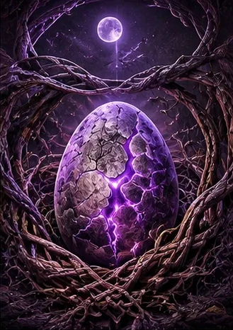
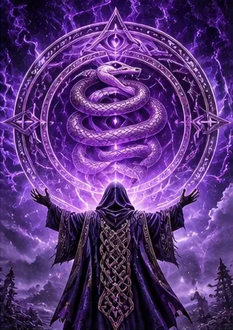
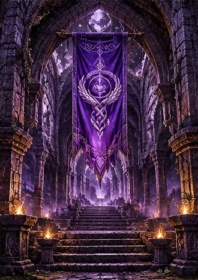
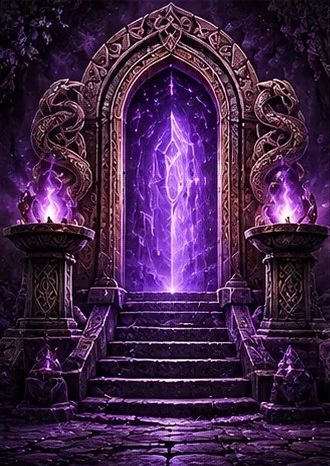

Ceremony
The Rites of the Coil
The ceremonies of the faithful, performed in-game, in character, and with a completely straight face.
The Rite of the First Scale

The rite of initiation, by which an egg becomes a Hatchling. It is the most joyful rite of the Cult, and the one newcomers are most likely to describe afterward as "intense."
- The Gathering. The faithful gather around the egg in a circle (three rings, if numbers allow). No one speaks.
- The Stare. The faithful look at the egg, without blinking, for one full minute. The egg may blink. The egg is expected to blink. The egg is forgiven.
- The Oath. The egg recites the Oath of the Coil aloud, in /say, before witnesses.
- The Three Taps. The presiding priest taps the egg on the shoulder three times (/tap, or a gentle /poke), once for each Turn.
- The Naming. The priest declares: "You were an egg. Now you are a Hatchling. Glory to Xal'Reth." All present answer, "Glory to Xal'Reth."
- The Welcome. The faithful descend upon the new Hatchling with warmth, enthusiasm, and a quantity of guild chat messages that has been known to crash a client.
The Rite of Shedding
Performed whenever a faithful wishes to let go of something: a bad habit, a grudge, a failure, or an outfit. It may be performed alone, but is usually performed before witnesses, because the Cult finds shedding in public more honest.
The faithful stands before the others and names what they are shedding. ("I shed my habit of pulling early." "I shed my anger at the hunter who took the bow." "I shed my transmog.") They then perform a physical act of shedding: they vendor an item, unequip a piece of armor, or simply /kneel. The witnesses respond, in unison: "Send it after the First Skin."
A faithful who sheds the same thing more than three times is gently reminded that the point of shedding is that it stays shed.
The Chant

The oldest rite of the Cult and the one performed most often: a call and response, spoken in guild chat or /say, that can be started by any faithful at any moment. All faithful present must answer. The Chant is called three times.
In the shortest form, used when time is pressing (on a boss pull, say, or when the Warm-Blooded are watching), any faithful may simply type Glory to Xal'Reth, and all who see it must type it back. A faithful who fails to answer the Chant has committed a small but noted lapse, and may expect a gentle accusation from Khaedara within the hour.
The Basking
The quietest rite. The faithful gather in a sunny place, preferably on warm stone, and simply stand there. No one speaks. No one moves. No one checks the auction house. The Basking lasts until the presiding faithful says "It is warm enough," which may be ten minutes or an hour.
The Cult's favorite basking places are listed in the Codex. Warm-Blooded who wander into a Basking often stop and stand with the faithful for a while out of confusion. The Cult counts this as a sign of the Unwrapping and records it carefully.
The Tribunal of Accusation

The great public rite of the Cult, presided over by an Accuser, usually Khaedara. It may be held anywhere, against anyone, at any time. The accused need not be a member of the Cult. The accused need not know the Cult exists. The accused rarely consents.
- The Selection. The Accuser targets the accused. There are no rules for selection. The Coil guides the target. Sometimes the Coil guides the target to whoever is nearest.
- The Charge. The Accuser states the charge aloud: "You stand accused of [crime] before the Coil." Charges are drawn from the Seven Minor Crimes, or from the Accuser's own observations, which are extensive.
- The Evidence. The Accuser describes the evidence. ("You have been standing there for four minutes." "Your cloak is a crime against the Coil.") The evidence need not be accurate. It only needs to be said with confidence.
- The Defense. The accused may offer a defense. The defense is heard, respectfully, in full. It is then disregarded.
- The Verdict. The Accuser declares the verdict. It is always "Guilty." The Cult has never recorded another verdict, and considers this proof of the Accusers' accuracy.
- The Sentence. The accused is either forgiven ("The Coil is patient. Go, and loiter no more."), written into the Ledger, or, in grave cases, banished to the Void.
The faithful may conduct Tribunals with the help of Xal'Reth The Accuser, an addon that selects charges automatically and keeps the proceedings moving at a dignified pace.
The Banishment to the Void

Reserved for the gravest offenders: repeat loiterers, chronic fire-standers, and anyone who has been heard to say Xal'Reth has wings. It follows a Tribunal and is pronounced by an Accuser or a member of the Inner Scale.
The Accuser faces the offender and declares, in /say: "By the Three Turns and the Unblinking Eye, I banish you to the Void. Go down past the Coil. Go down where the old skins drift. Go down, and think about what you did." All faithful present then turn their backs on the banished (/turn, or simply rotating the camera with great ceremony) and remain so for one full minute.
The banished are not, in practice, removed from anything. The Cult knows this. The banished usually do not. The faithful consider the Banishment entirely symbolic and also completely real, and see no contradiction.
The Banish to the Void button on the Accuser relic performs this rite in a single click, for faithful who are busy.
The Vigil of the Long Wait
A test of patience in honor of the Patient Ones of the Hidden Centuries. The faithful gather in a single place and wait. For what, the scriptures do not say. That is the point. The Vigil ends only when the presiding priest declares "It has been long enough," and the priest is encouraged to make it slightly longer than that.
The faithful are forbidden during the Vigil from speaking, emoting, checking the time, or alt-tabbing. The record for the longest Vigil is held by Xalrathiel, who once sat for so long that the server logged her out for inactivity. The Cult considers this a miracle.
The Returning
When a faithful leaves Azeroth for good (stops playing, moves on, goes outside), they are said to have returned to the Coil. The Cult does not mourn them. It basks in their honor, reads aloud the verses they loved most, and writes in the Ledger: "Gone to bask. Glory to Xal'Reth." Their name is never removed from the rolls. Should they ever come back, the faithful greet them as if they had only stepped away for a moment, because to the Coil, they had.
The Holy Calendar
- First Day of Each Month
The Day of Accusation
The Accusers go into the cities in force. Every faithful is encouraged to accuse at least one stranger. The Ledger grows.
- Every Week, Raid Night
The Gathering of Scales
The faithful assemble for the weekly rites. The Chant is called before the first pull and after the last.
- Anniversary of the Restoration
The Night of the Scale
The holiest night of the year, marking the day MaximumRex found the Scale in the Cave. The faithful hold a great Basking, recite the Chronicle aloud, and attempt, as a body, to get MaximumRex his quest item. It has never dropped.
- Midsummer
The Feast of Scales
A celebration of the warm season. The faithful bask at length, share feasts (not of eggs), and hold a contest for the finest green-and-gold transmog.
- Autumn
Shedfall
The great Shedding festival. Every faithful sheds one thing before witnesses. The guild bank is cleared of anything no one has touched in a year. This causes arguments. The arguments are also shed.
- Deep Winter
The Long Wait
A full week in which the faithful are asked to be patient about everything: queues, drops, loot rolls, and each other. Impatience during the Long Wait is accused at double severity.
- Last Night of the Year
The Eve of the Unwrapping
The faithful gather at midnight and watch for the Signs. None has ever appeared. The faithful are not disappointed. They are patient.